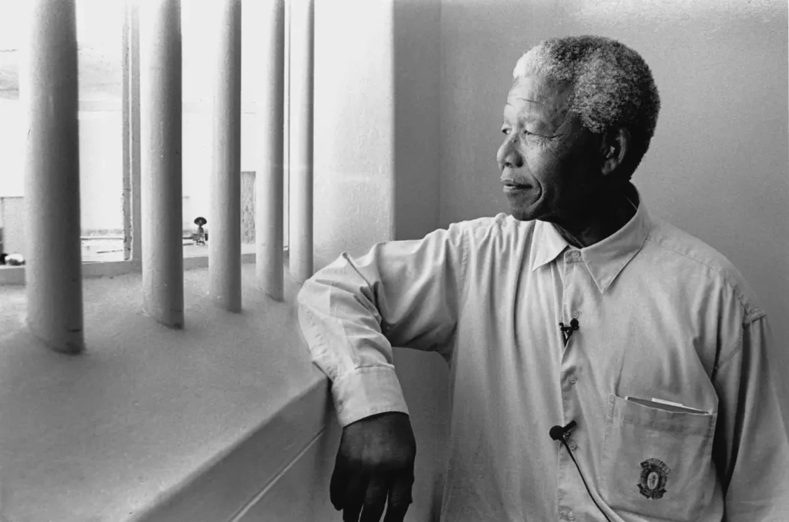

A symbol of freedom, resilience, and reconciliation
Nelson Mandela (1918–2013)

Nelson Mandela at Robben Island — where 27 years of imprisonment forged a leader whose resolve helped dismantle apartheid and reshape a nation.
Nelson Mandela was a South African anti-apartheid revolutionary, political leader, and philanthropist. He dedicated his life to ending racial oppression and promoting equality, justice, and peace.
Their famouse quote“It always seems impossible until it’s done.”
Timeline of Life & Achievements
1918Born on July 18 in Mvezo, South Africa. Raised with strong values of leadership and
justice.
1944Joined the African National Congress (ANC) and became actively involved in the fight
against apartheid.
1962Arrested for his anti-apartheid activities and sentenced to life imprisonment.
1964 – 1990Spent 27 years in prison. Despite harsh conditions, he remained committed to peace
and reconciliation.
1990Released from prison, becoming a global symbol of hope and forgiveness.
1993Awarded the Nobel Peace Prize for his role in peacefully ending apartheid.
1994Elected as South Africa’s first Black president in the country’s first democratic election.
1999Stepped down from the presidency, setting an example of humble leadership.
2013Passed away, leaving behind a legacy that continues to inspire the world.
Nelson Mandela’s life reminds us that courage, patience, and compassion can change the world. His legacy lives
on in the ongoing struggle for freedom and equality. Read More